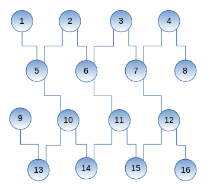

Il Qubit viene rappresentato come nell'immagine sovrastante ed è l'unità base delle informazioni che si possono avere dal quantum.
Una proprietà del qubit è la superposition ossia l'indeterminazione dello stato perchè non possiamo sapere con certezza se si trova nello stato 0 o 1.
Nell'immagine sottostante si riporta la simbologia usata per descrivere il Qubit e la rappresentazione grafica con la sfera di Block.
Matematicamente il qubit viene descritto tramite un vettore e la unitary matrix(matrice complessa quadrata che ha la matrice inversa) per cui UU* = I, nello spazio vettoriale di Hilbert, cioè uguale alla identity matrix ad esempio

Possiamo rappresentare i Qubits anche tramite un vettore nel piano cartesiano come nell'immagine sottostante:
Tramite la unitary matrix viene rappresentata la posizione del qubit all'interno della Bloch sphere e tramite i gate possiamo modificare il quantum state moltiplicando la unitary matrix con il vettore che rappresenta il gate. Nell'immagine sottostante una riproduzione della sfera di Bloch.

Un computer quantistico riesce a modificare lo stato del qubit tramite dei gates(comando pulse ogni gate ha una potenza diversa) per poi osservare lo stato e decidere se la posizione del qubit è uguale a 0 o 1. L'amplitude del qubit è il coefficiente per un particolare stato di superposition ad esempio nello stato 0.6∣0⟩ +0.8∣1⟩ l'amplitude per ∣0⟩ è 0.6 mentre l'amplitude per ∣1⟩ è 0.8.
La somma dei quadrati delle amplitude deve essere uguale a 1. Quindi il quadrato di 0.6 = 0,36 + 0.64(quadrato di 0,8) è uguale ad 1.
Il quantum state di un qubit è un vettore della lunghezza unitaria in uno spazio vettoriale complesso bidimensionale.
La misurazione dello stato di un qubit non è altro che la valutazione della probabilità che il qubit ricada su ∣0⟩ o su ∣1⟩ Ad esempio con il gate Hadamard abbiamo il 50% di probabilità che il risultato sia ∣0⟩ o ∣1⟩.
Mentre nel BELL STATE tra 2 qubits abbiamo il 50% di probabilità di avere ∣00⟩, lo 0% di avere ∣01⟩ o ∣10⟩ ed il 50% di avere ∣11⟩.
Il Bell State è importante perchè in esso è presente i 2 più importanti principi della quantistica, la superposition e l'entanglement.
Come possiamo vedere nel circuito sottostante in cui è rappresentato il Bell state la superposition è creata con l'Hadamard gate mentre con il Controlled Not gate creiamo l'entanglement.

Il BELL STATE è la base del Teleportation e del Superdense Coding(trasferire informazioni ad esempio da 2 qubits ad un solo qubit).

Se si necessita di creare uno scambio di informazioni ad es. il Teleportation tra 2 qubit che non sono collegati come nell'immagine del circuito sottostante tra il qubit 1 e 9 possiamo trasferire le informazioni del qubit 9 al qubit 5 con il gate swap.
Superdense Coding
Superdense coding è un quantum communications protocol che permete ad un utente di inviare 2 bits classici (0,1)
inviando 1 solo qubit.
Il protocollo prevde di predisporre un Bell state in 2 qubit separati q0(sender) e q1(receiver).
Al q0 viene poi assegnato un encoder in cui il sender aggiunge dei gate in base ai 2 bits da inoltrare come nello schema seguente:Se input 00 l'encoder inserisce il gate I
Se input 01 l'encoder inserisce il gate Z
Se input 10 l'encoder inserisce il gate X
Se input 11 l'encoder inserisce il gate XZ
Poi si ha il decoder in cui il destinatario tramite il gate Controlled Not(cx) tra i 2 qubit e Hadamard(q0) e poi con Measurement finale riceve i 2 bits inviati dal mittente.
Questo processo può essere usato anche per un controllo di sicurezza perchè se c'è una intrusione nel circuito si verificherebbe un collsso del qubit ed il risultato che il destinatario essendo diverso da quello atteso metterebbe in allarme sia il destinatario che il mittente.
Nelle immagini a lato si evidenzia lo schema logico mentre sotto il codice ed i risultati di una dimostrazione del superdence coding.
!pip install qiskit
from qiskit import QuantumRegister, ClassicalRegister, QuantumCircuit,execute, Aer
q = QuantumRegister(2,'q')
c = ClassicalRegister(2,'c')
#inserisco input
messaggio = '10'
circuit = QuantumCircuit(q,c)
circuit.h(q[0]) # Hadamard gate applied to q0
circuit.cx(q[0],q[1]) # CNOT gate
from qiskit import QuantumRegister, ClassicalRegister, QuantumCircuit,execute, Aer
q = QuantumRegister(2,'q')
c = ClassicalRegister(2,'c')
#inserisco input
messaggio = '10'
circuit = QuantumCircuit(q,c)
circuit.h(q[0]) # Hadamard gate applied to q0
circuit.cx(q[0],q[1]) # CNOT gate
#################ENCODER##################
if messaggio == '00':
pass # I gate
elif messaggio == '10':
circuit.x(q[0]) # X-gate
elif messaggio == '01':
circuit.z(q[0]) # Z-gate
elif messaggio == '11':
circuit.z(q[0]) # Z-gate
circuit.x(q[0]) # X-gate
if messaggio == '00':
pass # I gate
elif messaggio == '10':
circuit.x(q[0]) # X-gate
elif messaggio == '01':
circuit.z(q[0]) # Z-gate
elif messaggio == '11':
circuit.z(q[0]) # Z-gate
circuit.x(q[0]) # X-gate
################DECODER###################
circuit.cx(q[0],q[1])
circuit.h(q[0])
circuit.measure(q,c) # Qubits measured
circuit.draw(output='mpl')

simulator = Aer.get_backend('qasm_simulator')
result = execute(circuit, backend = simulator, shots = 1024).result()
counts = result.get_counts()
print(counts)
from qiskit.tools.visualization import plot_histogram
plot_histogram(counts)
circuit.cx(q[0],q[1])
circuit.h(q[0])
circuit.measure(q,c) # Qubits measured
circuit.draw(output='mpl')
simulator = Aer.get_backend('qasm_simulator')
result = execute(circuit, backend = simulator, shots = 1024).result()
counts = result.get_counts()
print(counts)
from qiskit.tools.visualization import plot_histogram
plot_histogram(counts)
Decoherence
La Decoherence è la perdita di informazioni che si ha nei circuiti quantistici che produce il fenomeno del Quantum Noise. Per ridurre la Quantum noise e la Decoherence si usa la Quantum error correction (QEC) cioè dei metodi atti a ridurre tali fenomeni ed avere dei valori più corretti.